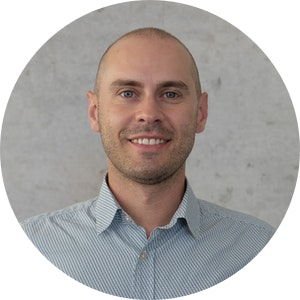

Eurac Research · Institute for Renewable Energy
Matteo Giacomo Prina
Research Group Leader of the Overall Energy System Modelling & E-Mobility group. I combine energy system models, optimisation and artificial intelligence to help regions and countries plan the clean energy transition.

About
My doctoral work on energy system modelling started a research trajectory at Eurac Research: beginning as a PhD student in the Photovoltaics group investigating high-renewable-penetration scenarios, the work led Eurac to create a dedicated Overall Energy System Modelling and E-Mobility group in 2019.
As post-doc and senior researcher I coordinated grants worth over 2.5 M€, and since October 2025 I lead the group, securing participation in further projects totalling 5.4 M€. My current focus is AI-enhanced surrogate models for fast, transparent and uncertainty-aware planning of large-scale energy systems, and the coupling of transport and energy sectors.
Highlights
Selected results and recognitions.
- Author of the European Climate Risk Assessment (EEA, 2024), lead author of Chapter 8 — Energy.
- Coordinator & PI of LIFE PLANtoACT (1.75 M€, 9 partners) and EFRE V2G-BOOST (650 k€).
- Junior Research Award Südtirol/Alto Adige 2025.
- Included in the Stanford/Elsevier World's Top 2% Scientists list, 2025.
- National Scientific Qualification as Associate Professor in Fluid Machinery, Energy Systems and Power Generation (09/C1), 2024.
- EUREGIO Young Researcher Award 2021 (2nd place); best paper SDEWES 2020 and best presentation SES 2020.
- Co-supervisor of 4 PhD and 15 MSc students — MSc theses led to 8 journal papers.
Experience
- 10/2025 – now
Research Group Leader
Eurac Research, Bolzano (IT)
- 06 – 09/2025
Visiting Senior Researcher
University of Victoria (CA) — deep learning surrogates
- 2022 – 2025
Senior Researcher
Eurac Research, Bolzano (IT)
- 2019 – 2022
Post-doctoral Researcher
Eurac Research, Bolzano (IT)
- 03 – 07/2017
Visiting PhD Student
Reiner Lemoine Institut, Berlin (DE)
- 2015 – 2019
Researcher
Eurac Research, Bolzano (IT)
Education
- 2015 – 2019
PhD Energy Engineering, cum laude
Politecnico di Milano — thesis
- 2011 – 2013
MSc Management Engineering
Energy & Sustainability Management, Politecnico di Milano
- 2007 – 2011
BSc Environmental Engineering
Politecnico di Milano
Tools
Selected publications
Full list on Google Scholar.
- Accuracy, robustness and comprehensibility – Challenges in bottom-up energy system modelsPrina MG, Noussan M. · PLOS Climate, 2026
- Deep learning surrogate model to explain decision variable synergies in energy system modellingPrina MG, Pelizzoni C, Judson M, McPherson M, et al. · Smart Energy, 2026
- Machine learning as a surrogate model for EnergyPLAN: speeding up energy system optimization at the country levelPrina MG, Dallapiccola M, Moser D, Sparber W. · Energy, 2024
- Energy modelling challenges for the full decarbonisation of hard-to-abate sectorsGroppi D, Pastore LM, Nastasi B, Prina MG, et al. · Renewable and Sustainable Energy Reviews, 2025
- Evaluating near-optimal scenarios with EnergyPLAN to support policy makersPrina MG, Johannsen RM, Sparber W, Østergaard PA. · Smart Energy, 2023
- Optimisation method to obtain marginal abatement cost-curve through EnergyPLAN softwarePrina MG, Fornaroli FC, Moser D, Manzolini G, Sparber W. · Smart Energy, 2021
- Classification and challenges of bottom-up energy system models – A reviewPrina MG, Manzolini G, Moser D, Nastasi B, Sparber W. · Renewable and Sustainable Energy Reviews, 2020
- Multi-objective investment optimization for energy system models in high temporal and spatial resolutionPrina MG, Casalicchio V, Kaldemeyer C, et al. · Applied Energy, 2020
- Transition pathways optimization methodology through EnergyPLAN software for long-term energy planningPrina MG, Lionetti M, Manzolini G, Sparber W, Moser D. · Applied Energy, 2019
- Multi-objective optimization algorithm coupled to EnergyPLAN software: The EPLANopt modelPrina MG, Cozzini M, Garegnani G, et al. · Energy, 2018
Contact
Institute for Renewable Energy
Via A. Volta 13/A, 39100 Bolzano, Italy